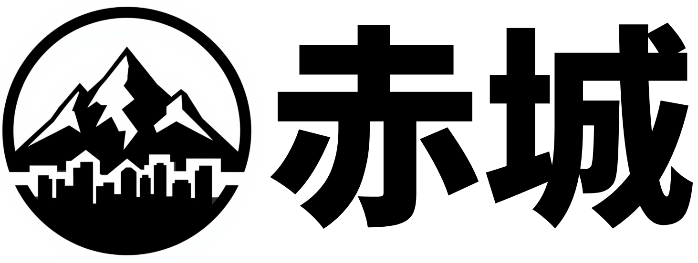

1. チート、サーバーの不正利用、およびサブアカウント
1.1 チートクライアントおよびその他の改造（Mod）
他のプレイヤーに対してゲームプレイ上の不当な優位性を与えるチートクライアント、マクロキー、その他の改造（Mod）の使用は禁止されています。盗難アカウントや不正に入手したアカウントを使用してプレイすることも禁止です。この規則に違反したプレイヤーは、永久BAN（アクセス禁止）の対象となります。
以下のModは対象外です（使用可能です）：
OptiFineなどのパフォーマンス向上Mod。
防具やステータス効果を表示するHUD Mod。
当サーバーのウェブサイト上のマップよりも多くの情報を表示しないミニマップMod。
純粋に見た目を変えるだけのMod。
プリンター機能を使用しないLitematica（ただし、Schematicaの使用は禁止です）。
使用しているクライアントの改造が許可されているかどうか不明な場合は、サーバー運営スタッフにお問い合わせください。
1.2 サーバー規則違反への意図的な加担・便益の享受
このページに記載されている規則への違反行為について、意図的に協力・参加したり、その違反から利益を得たりしたプレイヤーは、自身がその違反行為を行ったものとして扱われる場合があります。
1.3 技術的な不具合およびサーバーの不正利用
サーバーの明らかなバグや技術的な不備を悪用することは禁止されています。スタッフに報告することなくバグや不備を悪用したプレイヤーは、永久BANの対象となる可能性があります。
1.4 サブアカウント
サブアカウント（「alt」とも呼ばれます）の使用は禁止されています。プレイヤー1人につき1つのアカウントのみ使用可能です（アカウントの共有も禁止です）。この規則が意図的に破られた場合、サブアカウントはBANされ、メインアカウントに対して警告が行われることがあります。2回目の違反があった場合、メインアカウントもBANされます。なお、各プレイヤーが自身のアカウントを単独で操作している限り、同じネットワーク接続環境からプレイすることは許可されています。
メインアカウントを変更したい場合は、サーバー運営スタッフにご連絡ください。
1.5 意図的なラグの発生やEarthMCサービスの妨害
当サーバーが提供するサービスに意図的に悪影響を及ぼす行為を行ったプレイヤーは、永久BANの対象となる可能性があります。
2. 振る舞いとチャット
2.1 名称について
国家名
国家名は、現在または過去に実在した国家、地域、州、あるいは明確な境界線を持つその他の広域な地理的エリアの名前に基づく必要があります。
ゲーム内における国家の首都の位置も、現実世界でのその国家・地域・州の境界線と整合している必要があります。町の名前
町の名前は、不適切、有害、または不快感を与えるものであってはなりません。
実在する場所と同じ名前の町を作成する場合、その場所に最も近い位置で作成された町が優先されます。このようなケースは管理者が対応し、場所が不適切な町は改名される場合があります。
プレイヤー名
アカウントのユーザー名、ニックネーム、スキン、およびTownyの称号は、宣伝、露骨な表現、性的な内容、その他不適切なものであってはなりません。
2.2 プレイヤー、町、国家からの盗みや襲撃
他のプレイヤーからの略奪や盗みは許可されています。自身の資産を守ることは、各プレイヤーの責任です。
2.3 スパム
スパム行為や、チャットの流れを妨げるようなメッセージの送信（通常、類似したメッセージを繰り返し送信することなど）は禁止されています。
2.4 不適切な行動
以下に挙げる不適切な行動は、サーバー内では禁止されています。
露骨なイジメや侮辱的な言葉遣い。
自傷行為を助長したり、暴力を扇動したりする発言（人種的・社会的マイノリティに対するヘイトスピーチを含む）。
性的な内容を含む露骨な議論や誘いかけ。
プレイヤーの「現実世界」での評判を損なうような、根拠のない、または悪意のある発言。
プレイヤー（特に未成年者）に対して、グルーミング（心理的に懐柔して支配下に置く行為）、強要、または不適切な関係を築こうとする行為は、サーバー内外を問わず厳格に禁止されています。これには、個人情報の要求、不適切なメッセージ、軽率な誘惑（口説き）、あるいは年少のプレイヤーを搾取・操作するような会話などが含まれますが、これらに限定されません。
有害な行動（トキシックな振る舞い）については個別に判断され、何が有害な行動にあたるかの最終決定権はスタッフが有します。同様の行動を繰り返した場合、ミュートや警告の対象となり、最終的には永久追放（BAN）される可能性があります。
2.5 他のプレイヤー、町、国家へのなりすまし
ユーザー名、ニックネーム、町や国家の名前などを利用して、他のプレイヤーになりすます行為は禁止されています。違反者には、本来のキャラクター名や状態に戻すよう求められます。何らかの被害が生じた場合、スタッフの判断により、違反したプレイヤーをBANする可能性があります。
2.7 個人情報の共有
本人の明確な許可なく、他者の個人情報や身元情報を共有することは厳格に禁止されています。個人情報には、氏名、プレイヤーの「実生活」での写真、電話番号、自宅住所、個人情報を含むソーシャルネットワーク情報、学校や勤務先の所在地、家族関係、IPアドレスなどが含まれますが、これらに限定されません。これには、他者が自ら開示した情報も含まれます。あるプレイヤーがあなたに個人情報を共有したからといって、その情報をそのプレイヤーに代わって第三者に開示する権限があなたに与えられるわけではありません。
また、他者の個人情報を、脅迫や操作（コントロール）を目的として利用することも認められません。
2.8 リンクの共有
悪意のある有害なリンク（ウイルスやIPロガーなど）は禁止されています。このページに記載されているルールに違反するようなリンクの送信も禁止です（Discordなどで他のプレイヤーにリンクを送る場合も含まれます）。
性的、あるいは極端に暴力的・不快なコンテンツへのリンクは禁止されています。その他のリンクは許可されていますが、スパムフィルターに引っかかる可能性があります。
2.9 宣伝行為
サーバーに関連しない宣伝行為は禁止されています。
2.10 現金によるコンテンツやサービスの売買
ゲーム内のアイテムやサービスを現実の金銭で売買すること（またはその逆）は禁止されています。
2.11 グローバルチャットでの使用言語
グローバルチャットチャンネルでは、英語のみを使用してください。他の言語を使用したい場合は、タウンチャットやプライベートメッセージなどのプライベートなチャットチャンネルを利用してください。ただし、オンラインのプレイヤーが自分と同じ言語を話す人だけ（またはほとんどがそうである）場合は、グローバルチャットでもその言語を使用することが許可されます。
3. グリーフィング（荒らし行為）
3.1 クレーム（領地）内および周辺の地形破壊
クレーム内、またはクレームから5チャンク以内の範囲で地形を破壊・損傷させる行為（グリーフィング）は禁止されています。このルールに違反した場合、警告が行われ、破壊された箇所はロールバック（復元）されます。複数回違反したプレイヤーは、永久BAN（永久追放）の対象となる可能性があります。
グリーフィングの例（これらに限定されません）：
「コブルモンスター」：溶岩と水を使って作られる山のような構造物。
溶岩/水のカーテン：空中に溶岩や水を一列に配置し、落下する溶岩の壁を作ること。
TNTによるクレーター作成。
タウン内や周辺でのエンティティ（ニワトリ、ボートなど）の大量スポーン。
近隣タウンのプレイ体験を意図的に妨害する目的で、他のタウンの近くにタウンを作成する行為（自身のクレーム内でのグリーフィング）も禁止されています。
3.2 未開拓地（ウィルダネス）での地形破壊
Townyにおいて、未開拓地（ウィルダネス）とは、現在どのタウンにもクレームされていない土地を指します。クレームされたエリア内やそのすぐ近くにない限り、建造物や地形を破壊することは許可されています。ただし、未開拓地であっても、大規模な地形破壊については、プレイヤーからの要望があればロールバックされる可能性があります。
既存の2つのタウンを意図的に接続している鉄道や氷の道を破壊することは、未開拓地であっても禁止されています。これは線路（レール）だけでなく、鉄道を構成するすべてのブロックに適用されます。 3.3 タウンの領地設定（クレーム）
近隣タウンの拡大を妨げるような形での領地設定（いわゆる「クレーム・ブロッキング」）は禁止されています。これには、領地を細長く突き出させる「クレーム・アーム（腕状の領地）」の作成や、妨害を意図した領地設定などが含まれます。
タウンから突き出すような「クレーム・アーム」を作成することは認められません。これらは、他タウンの入植や拡大を妨害したり、全域を正式に領有することなく実質的な支配範囲を不当に広げたりするために使われることが多いためです。ただし、船舶については例外とされます。また、海洋上の前哨基地（アウトポスト）に伴って作成されたアームであっても、後にそのアーム部分の領有権を放棄（アンクレーム）するならば認められます。
タウンの境界内に「未領有のチャンク（領有されていない区画）」を含めることは認められません。これを行うと、正規の領地上限を増やすことなく、タウンの規模を実質的に拡大できてしまうためです。
また、他タウンのチャンクを奪う（オーバークレームする）際、そのタウンを分断してしまうような形での領地設定も禁止されています。オーバークレームを行う場合は、対象となるタウンが分断されず、一つのまとまった領域として維持される必要があります。
3.4 特定のブロックの持ち出し（盗難）
価値のある特定のブロックを持ち出す行為は「グリーフィング（荒らし）」とはみなされず、許可されています。ただし、たとえ自分にとって価値があるものであっても、容易に入手可能なブロックについてはこの限りではありません。
3.5 大規模な地形改変
マップ上の正確な地理情報を維持するため、自然の地形に対する大規模な改変は認められません。一般的に、景観への変更がウェブサイト上のマップ表示における自然の景観を変えてしまうような場合は、撤去の対象となります。具体例としては、大きな湖や川の水を抜くこと、現実には存在しない人工島を作ること、あるいは海面をプラットフォーム（床）で覆うことなどが挙げられます。なお、ウェブサイト上のマップ表示に影響を与えない垂直方向の地形改変は許可されています。
3.6 マップアート
マップアートの作成は、他タウンの活動を妨げたり、大規模な地形改変（海上の埋め立てなど）を伴ったりしない限り許可されます。ただし、ガラスを用いて作成され、日常的に使用されている海上のマップアート用プラットフォームについては例外的に認められる場合があります。マップアートは、未利用のスペースが多い「グリーンランド（Greenland）」エリアに設置することが推奨されます。グリーンランド以外の場所に設置する場合は、そのエリアを自タウンの領地として確保（クレーム）する必要があります。領地化せずに設置し、近隣タウンから不快に思われた場合、「近接グリーフィング（迷惑行為）」とみなされる可能性があるためです。作成するマップアートには、ヌード、性的なコンテンツ、人種差別的な表現、その他ルールセクション2の規定に違反する内容を含めることはできません。